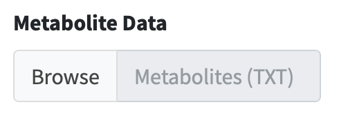
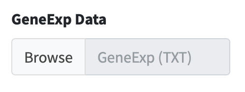

MNet Manual
2024-10-30
1 OVERVIEW

The surge in metabolomics and transcriptomic data has necessitated the development of innovative network analysis tools for the integrated analysis of multi-omics data. However, current tools often focus on individual pathways, extracting the subnetwork for the interested genes and metabolites or extracting the correlation subnetwork, neglecting the valuable information embedded in gene-metabolite or metabolite-metabolite knowledge networks across all metabolic pathways. In response to this gap, we introduce an integrated analytical tool MNet, an R package for mining metabolomics coupled with clinical and transcriptomic data.
MNet introduces three key feature to enhance the analytical capabilities：
-
Knowledgebase - dbMNet: dbKEGG for extended pathway analysis and dbNet for metabolism-related subnetwork analysis
-
Algorithm for extended pathway analysis: identify dysregulated metabolic pathways via considering both metabolites and genes
- Extended pathway enrichment analysis (EPEA)
- Extended differential abundance analysis (EDA)
- Extended data sets enrichment analysis (ESEA)
-
Algorithm for metabolism-related subnetwork analysis: Maximising the potential of our well-established dnet algorithm in integrative analysis of metabolomic and transcriptomic data to provide a systems-level understanding of metabolic interconnections
| Advance since any previous publication (if relevant): Integration of metabolomic and transcriptomic data is vital for pathway-centric, systems-biology understandings of disease [1,2]. Existing pathway knowledgebases, including but not limited to BiGG [3], KEGG [4], Reactome [5], SMPDB [6], and WikiPathways [7], provide metabolic pathway information on genes and metabolites. However, these databases lack the comprehensive integration of both metabolites and genes necessary for downstream pathway and subnetwork analyses, thereby limiting the exploration of potential therapeutic targets from a metabolomic perspective. Our well-established algorithm/tool called ‘dnet’ and its related software [8–10] have received nearly 400 citations over time (AS OF October 2024 according to Google Scholar). They excel at identifying core subnetwork using prior knowledge but has been limited to genomic or transcriptomic challenges, without extending its application to metabolomics. In this aspect, MNet supports pathway-centric, network-driven analyses, enabling by the compilation of the dbMNet knowledgebase, which includes dbKEGG and dbNet. The dbKEGG facilitates KEGG metabolic pathway-based extended pathway analysis to identify dysregulated metabolic pathways involving both metabolites and genes. The dbNet enhances metabolism-related subnetwork analysis by leveraging gene-metabolite and metabolite-metabolite information to identify subnetwork that best explain the input data. |
| ``` r if(!require(BiocManager)){ install.packages(“BiocManager”) } |
| if (!require(remotes)) { BiocManager::install(“remotes”, dependencies=T) } |
| if (!require(devtools)) { BiocManager::install(“devtools”, dependencies=T) } |
| BiocManager::install(“hfang-bristol/dnet”, dependencies=T) BiocManager::install(“tuantuangui/MNet”, dependencies=T) |
| ## Check the package ‘MNet’ successfully installed library(help=MNet) ``` |
| # Input and output ## Data input The sample data comprises an integrated analysis of metabolomic and transcriptomic profiles in triple-negative breast cancer. |
 |
 |
  |
| ## Result output The analysis results can be output in image form in two formats: PDF and JPEG. The figure width, height and resolution(DPI) can be adjusted. |
 |
| # Metabolic Network The metabolism-related subnetwork analysis is executed through an analyzer specifically designed to identify subnetwork based on input gene- and metabolite-level summary data. |
| ## Meta-Gene Network |
| Procedure |
| In R network analysis, nodes number refers to the total count of nodes, representing individual elements or entities within the network. |
Results
By utilising the dbNet knowledgebase and employing the dnet algorithm, MNet analyses a list of genes and metabolites along with their significance information, allowing a graphical display of the metabolism-related subnetwork that contains both genes and metabolites